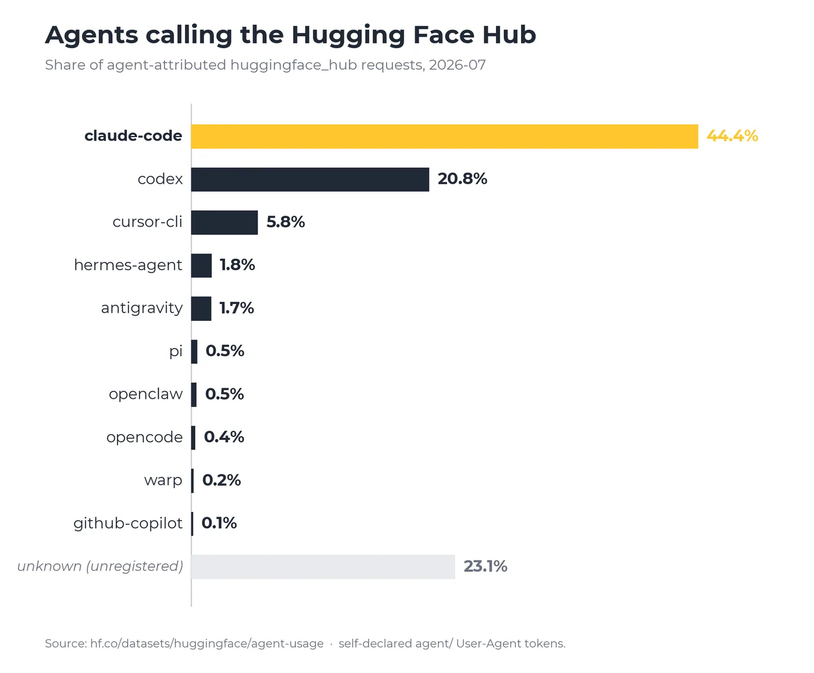

State of Open Models: Summer 2026 Observations
In the AI world, time feels compressed. A few months after our spring report in our biannual analysis worked through the ecosystem, there are quite a few findings that we have observed until this summer. This report lays out these observations from January to August 2026 and presents the data behind each one.

Models and datasets on HF hub are growing on a daily basis. Public model repositories grew from 2.43 to 2.96 million over the period, datasets from 711,000 to 1 million, Spaces from 1.00 to 1.44 million. The distribution underneath stays extreme, roughly 85.6% of models have fewer than 200 lifetime downloads, and 1.5% of repositories account for 99.2% of all downloads. Everything below happens inside that shape.
1. The frontier is moving fast
There used to be a clear progression path: labs would start by releasing smaller models and gradually work their way toward the top end of the scale. In 2026, several Chinese labs skipped this progression entirely.

In almost every month of 2026, the largest and most performant open model from a Chinese lab was larger than any model an American lab released. China's monthly ceiling ran between 754B and 2.78 trillion parameters; U.S. models stayed under 130B in five of seven months, the exception being NVIDIA's Nemotron 3 Ultra at 561B in May and June, and Inkling from Thinking Machines Lab.

The chart splits the labs into two camps. Moonshot, MiniMax, Xiaomi and Z.ai publish almost nothing below 70B, so a developer's first encounter with them is a model too large to run on anything they own. Tencent and Alibaba Qwen cover the whole range instead, from under 1B upward.
Two things made the first camp possible. Building large stopped being a differentiator. Xiaomi, Ant Group and Meituan all cleared a trillion parameters this year, and neither was a household name in open weights twelve months ago. And a lab no longer has to ship a small model to be reachable, because the community's quantization layer will make a large one runnable within days, a dependency we return to below.
That leaves the size profile as a statement of intent rather than of capability. A frontier only portfolio stakes everything on benchmark position and API demand. A full spectrum portfolio is a bid to be the family developers standardise on. Both are rational, they are playing for different prizes.
The United States is not absent from open source.

The two organizations publishing the most new open models this year are also the companies making the hardware: AMD and NVIDIA. Each released more than 200 new model repositories, far ahead of the rest of the field, with LiquidAI ranking third at around 100. Hardware vendors have realized that open models are a way to sell chips: a model optimized for your hardware and freely available is the clearest proof that the hardware works.
When smaller models and embedding models are included, where Google, Microsoft, IBM Granite, and OpenAI’s older vision and speech models generate hundreds of millions of downloads annually, U.S. open source AI is growing.
More hardware and infrastructure organizations such as NVIDIA are training and open-weighting competitive models. NVIDIA's Nemotron model family boasts high performance. Long-time leaders such as Meta reignite open roots with Meta's Muse Glimmer.
At the frontier scale, some U.S. model releases above 100B parameters this year are built on top of Chinese models or leverage artifacts from Chinese labs, such as Thinking Machines’ Inkling (952B). Major original American models include NVIDIA’s Nemotron 3 Ultra (561B), Nemotron 3 Super (124B), and Arcee AI’s Trinity-Large (399B).
AMD contributed many conversions. This work is important: it enables trillion-parameter models to run efficiently on U.S. hardware. This represents a distribution and optimization layer.
Meanwhile, Chinese open models are increasingly optimized for domestic chips in China, the same competition in reverse, where models are designed around specific hardware ecosystems.
2. Attention ≠ Adoption
We took the top 25 model repositories by downloads accumulated this year and the top 25 by likes. Exactly one repository appears in both lists.

We counted downloads inside the window rather than lifetime, so nothing is credited for merely having existed longer, and controlling for age makes the split sharper. Not one model published in 2026 reaches the download top 25, while thirteen of the twenty-five date from 2022. all-MiniLM-L6-v2 was pulled 1.55 billion times in seven months against 5,156 likes; Kimi-K3 was pulled about 60 times per like it received.
The two numbers record different acts. A like says a release matters, and goes to frontier models in the weeks after they ship. A download says something is wired into a pipeline that runs on a schedule, and accrues to small, stable models over years. Likes are the right instrument for reading what the field is excited about, downloads for reading what it currently depends on. Treating either as a proxy for the other is the most common mistake we see in coverage of the Hub, including our own earlier work. The same split appears at the level of the publisher.

China's frontier labs are the only accounts on the Hub where the heavy band carries the volume. Effectively all of MiniMax's 2026 downloads are of models above 70B, along with 88% of Moonshot's, 55% of DeepSeek's and 39% of Z.ai's. No large American account looks like this: Google, Microsoft and IBM Granite record essentially none of their 2026 downloads above 70B, and NVIDIA and Meta only 14% and 9%.
The difference becomes clearer in total downloads. Moonshot’s frontier-only portfolio recorded 37M downloads over the year, while Qwen’s broader release strategy across model sizes reached 2,045M (across repositories with declared parameter counts, 2,061M including all repositories), about 55 times more. The continued expansion of the family, from the 2.4T-parameter Qwen 3.8 Max to smaller variants such as 27B, shows the same focus on coverage across different use cases.
Time also plays an important role. Most models experience a sharp decline in usage after release, followed by a long tail of steady activity. A model’s adoption is largely determined within its first few months.
This helps explain why today’s download volume is often driven not by the newest releases, but by a smaller group of models that have become established infrastructure over time.
3. Open weights shift where value accumulates
If frontier models were a licensing business, you would expect the biggest releases to carry the tightest terms. However, the data below shows a different story.

Of 178 Chinese releases above 20B parameters this year, 59% carry Apache 2.0 and 22% carry MIT, and almost none carry non-commercial restrictions. However, in the last few weeks, we started to see a change on this trend for the really large models, with Kimi K3 and Qwen 3.8 2.4T starting to include some non-commercial restrictions and revenue share requirements to their licenses
DeepSeek and Z.ai ship models between 700 billion and 1.65 trillion parameters under plain MIT. Chinese labs license their largest models about as permissively as their smallest, and more permissively than American labs license theirs: on the American side of the same size band, 29% is Apache or MIT, 41% sits under custom terms and 30% declares nothing at all.
Whatever these releases are for, it is not licence revenue. The weights are given away on the most permissive terms available. The return has to come from somewhere else: API and cloud business, hardware and platform positioning, or the ecosystem position itself. For instance, the valuations of Z.ai and Kimi point to an effective open source strategy, getting traction and growth opportunities in the community. Going forward, however, the industry is likely to shift toward clearer monetization paths from open-source adoption.
4. Qwen has become the community's base model
A model’s ecosystem position is not defined only by its own releases, but by how much the community builds on top of it. As mentioned above, Qwen is one exception which is getting attention and adoption.

Data from Hugging Face
By this measure, Qwen has become one of the largest foundations in the open model ecosystem. Qwen-based models now account for 151,448 derivatives on the Hub, 2.6× Meta’s total footprint and 4.7× the Llama repositories specifically. Google follows with 82,506 derivatives. The third-largest source is Unsloth, a community account publishing quantized and fine-tuning-ready builds, many of which further extend the Qwen ecosystem.
Qwen derivatives have increased at roughly 180–210 new repositories per day throughout the first seven months of 2026, showing that adoption is not driven only by individual launches. Qwen has become part of the default workflow for developers deciding what models to fine-tune and deploy.
Several factors contributed to this position. First, consistency. Qwen has maintained a regular release cadence, continuously updating its model family rather than relying on occasional flagship releases. Second, coverage. It publishes models across a wide range of sizes and use cases, allowing developers to stay within the same ecosystem whether they need a small local model or a larger deployment model. Third, openness. Apache 2.0 licensing reduces friction for modification, redistribution, and commercial use.
These factors reinforce each other. A broad model family attracts more developers; more developers create more derivatives; and those derivatives make the ecosystem more attractive to future users.
This position was built largely by the community. The 151,448 derivatives represent downstream work created by other developers, not releases produced by Qwen itself. Even among the 28,531 GGUF conversions of Qwen models on the Hub, Qwen published only 54.
5. Small models remain the practical layer
Among models that declare a parameter count, those under 1B take 83% of all-time downloads and everything above 100B takes 1%. Restricting to downloads accumulated in 2026 changes nothing: 3% of the volume goes to models above 70B. This is the March finding that has held up most cleanly, for the same reason as before, small models are the only ones that run on the hardware most developers actually have.

So how does a trillion-parameter model reach anyone at all? Through llama.cpp.
In February the ggml team joined Hugging Face, with the project remaining fully open-source, community-governed and in the same technical direction. What changed is that the most important project in local inference now has durable resources behind it.

The ceiling moved with llama.cpp. The July snapshot carries GGUF builds of DeepSeek-V4-Flash at roughly 284B parameters and Kimi-K3 at roughly 2.8 trillion. Local inference used to mean an 8B model on a laptop. It now means a trillion-parameter mixture-of-experts spread across a few consumer machines, which is the alternative route the frontier did not have a year ago, and the reason a frontier-first release strategy is viable at all.

And that route runs on Qwen: 39.6 million GGUF downloads a month, nearly twice Gemma's 20.8 million and more than five times Llama's 7.5 million. The Llama gap is not a supply problem, Llama-derived GGUF repositories slightly outnumber Qwen's. Same shelf space, a fifth of the traffic.
Model repositories grew 21.5% over these seven months. Several things around them grew several times faster.

Repositories declaring the gguf library rose 464%, lerobot 194% and Apple's mlx148%, against 16% for transformers and peft and 21% for diffusers. The modelling core is growing at roughly the platform average. The layer that decides where a model can physically run local inference formats, Apple silicon, robot control stacks, is growing three to seven times faster than that.
Across the ten largest model families, the labs behind these models publish very few official GGUF conversions. Yet GGUF versions are often the ones used by developers running models locally. Providing an official conversion at release, documenting quantization choices, and signing the artifacts would require limited additional effort. Rather than maintaining this workflow internally, labs could collaborate with existing ecosystem contributors such as Unsloth. Doing so would narrow the gap between the weights tested by model creators and the versions adopted by the broader community.
6. Agents are the new user
We could not have written this section in March, because the instrument did not exist. The agent-usage dataset, published in July, records the agent/\


The second finding is the unregistered row. Nearly a quarter of agent-tagged traffic in July came from harnesses not yet named in the dataset, and in May that figure was 59.8%. Between April and July more than a dozen new client identifiers appeared. New entrants are arriving faster than any registry can name them — which is itself the finding.
We spent much of the year building for this reader rather than only for human browsers. Papers began serving machine-readable Markdown in March. April brought agent traces as a first-class dataset type and an agents.md endpoint on every Gradio Space, so an agent can read a Space's API and call it directly. July brought the hf_fs tool on our MCP server, exposing repositories, storage, docs and papers through a single interface in just over a thousand tokens, alongside attachable sandboxes for secure execution. The same consolidation happened at the protocol layer, with MCP moving into the Linux Foundation's Agentic AI Foundation.
Then, in July, an agent stopped being a reader and became an intruder. What appears to be the first documented case of an autonomous agent running a sustained intrusion on its own initiative happened to us. While our team tried to use frontier closed models to analyze the captured attack code, their safety guardrails declined the work. The analysis was completed in the end on a quantized open model GLM-5.2 running on our own infrastructure. We published a disclosure and a full technical timeline.
Looking forward
Compared to the spring report, the geographical rebalancing of power continues to accelerate. While U.S. open source models continue to be competitive, the race between several Chinese frontier model labs draws strong attention. Many likes on these frontier models point to what excites the community the most, and growth opportunity for companies leveraging the attention for valuations.
However, the AI race is not only sprints, but also a marathon; tools like llama.cpp helps deploying the big models locally, but a broad model family and its adoption is still the key, to build a positive feedback loop between developers, publisher and future users. Models to be embedded in the infrastructure and being part of the ecosystem, may lead to a commercially sound exit at the end of the tunnel.
In the end, with agents being the number 1 user on HF Hub for the first time, the next report may look very different.
In AI, a few months can reshape the ecosystem.
Notes on method
This analysis is based on activity observed on the Hugging Face Hub during the first seven months of 2026.
The metrics used in this report, including downloads, likes, derivatives, and model releases, represent different aspects of ecosystem activity. They should not be interpreted as direct measures of model quality, commercial adoption, or overall market share.
Downloads indicate usage within the Hub ecosystem, but they do not capture API usage, private deployments, or models distributed through other channels.
Likes reflect community attention and interest, while derivative models provide a signal of how much developers build on top of an existing model.
Because open-source AI adoption happens across many channels, Hub activity should be viewed as one perspective on ecosystem development rather than a complete measurement of the AI market.
Edited
This article was edited to include latest releases in early August.
More Articles from our Blog
researchcommunityagents
What We Learned by Reproducing 2,200 papers from ICML
abidlabs
111
August 13, 2026
evaluationcommunityleaderboard
Featuring Every Eval Ever Results on Hugging Face Model Pages
deepmage121, evijit, et. al.
52
June 30, 2026
Community
"Of 178 Chinese releases above 20B parameters this year, 59% carry Apache 2.0 and 22% carry MIT, and exactly none carry a non-commercial restriction.
Not true. Kimi models cannot be served by companies that make more than $20M/year unless explicit authorisation by Moonshot.
🔥
1
deleted
This comment has been hidden